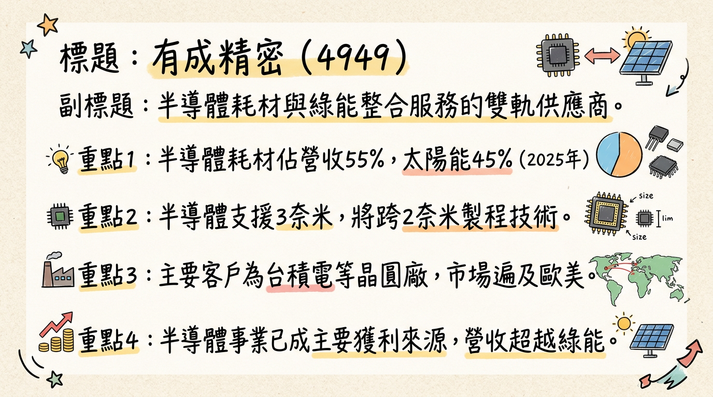
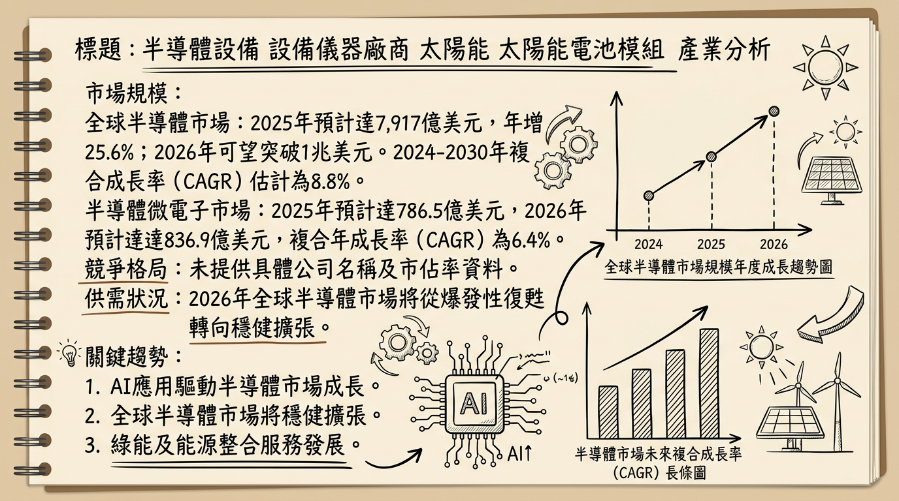
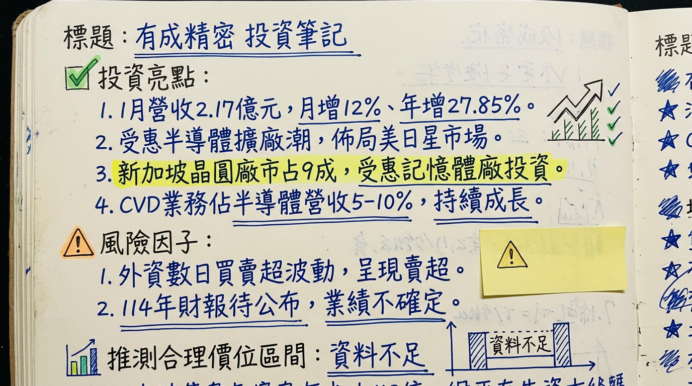

有成精密成功轉型，將核心業務重心轉向高毛利的半導體先進製程關鍵耗材及精密零組件，受惠於全球晶圓廠擴產潮與AI驅動的需求，並透過「兩年產能翻倍」計畫強化供應鏈地位。同時，綠能事業則聚焦高階屋頂型模組與儲能整合服務，擺脫傳統價格競爭，整體營運結構與獲利能力顯著改善，預計2025年實現全年轉虧為盈，展望2026年成長動能強勁。
有成精密（4949）採半導體與綠能雙軌營運模式，近年營收結構發生顯著變化，半導體事業已成為主要的獲利來源。
* 核心產品： 晶圓製造前段製程的關鍵耗材與維修服務，特別是「離子植入機」耗材（材料包含石墨、難熔金屬如鎢、鉬零組件）。
* 產品延伸： 已延伸至沉積製程（CVD、PVD）設備所需的精密零組件，強調高潔淨度與耐腐蝕特性。
* 製程能力： 能支援3奈米製程，並預計未來將跨入2奈米先進製程。
* 主要客戶： 涵蓋台灣主要晶圓製造商（如台積電），並外銷至新加坡、美國、德國等國際市場，與國際大廠有長期合作基礎。
* 綠能事業群：
* 自有品牌： 「WINAICO」，主要銷售高效能太陽能模組，鎖定歐洲、澳洲、美國等海外市場的高階屋頂型產品，推出了背接觸式WBC極致黑曜系列模組。
* 服務範圍： 提供能源整合管理服務，包含太陽能發電、儲能系統、工業微電網的設計、建置與維運。
| 事業群 | 營收佔比 | 備註 |
|---|---|---|
| 半導體 | 50% - 60% | 已成為公司主要獲利來源，比重持續提升。 |
| 綠能 | 40% - 50% | 聚焦高階市場與能源整合服務，虧損收斂中。 |
* 太陽能業務： 在歐、亞、澳及美國經營品牌。
* 相關題材：
* 先進製程需求： 受惠於AI、5G、電動車與物聯網帶動的半導體需求，公司積極配合客戶深化3奈米、未來2奈米關鍵零組件布局。
* 產能擴張： 因應客戶需求熱絡，已啟動擴產計畫，目標兩年內（2026-2027年）將半導體耗材產能翻倍。
* 綠能轉型與儲能應用： 在歐洲與澳洲推廣儲能應用，目標在2026年讓太陽能事業虧損收斂，轉型為智慧綠能供應商。
* 非中系供應鏈/自有品牌優勢： WINAICO的非中系供應鏈及自有品牌優勢，在國際市場具競爭力。
* 有成精密具備支援3奈米製程的能力，並預計跨入2奈米，是少數能提供離子植入機和薄膜沉積製程所需高潔淨度、耐腐蝕精密零組件的供應商。
* 與台積電等國際主要晶圓製造商建立長期合作基礎，產品通過嚴格驗證，客戶黏著度高，能穩定獲取訂單並隨客戶海外擴張。
* 積極啟動「兩年產能翻倍」計畫，並已於2024年底完成第二座半導體新廠建置，有效應對全球晶圓廠擴產的強勁需求，確保未來營運動能。
* 產品線延伸至化學氣相沉積（CVD）相關機構件，強化了在半導體薄膜製程領域的競爭力。
* 自有品牌WINAICO聚焦歐洲、澳洲、美國等高階屋頂型市場，並推出高效能背接觸式模組，有效避開中國廠商的低價競爭。
* 從單純模組銷售轉型為提供能源整合管理服務（太陽能發電、儲能系統、工業微電網），符合全球能源轉型趨勢，創造更高附加價值。
* 在太陽能業務方面，WINAICO的非中系供應鏈及自有品牌優勢，使其在國際貿易政策調整（如美國對東南亞新關稅）時，具備潛在的轉單效益，有助於擴大在特定市場的市佔率。
| 月份 | 金額 (億元) | 月增率 MoM (%) | 年增率 YoY (%) |
|---|---|---|---|
| 2026/01 | 2.17 | +12.00 | +27.85 |
| 2025/12 | 1.94 | +1.05 | +5.79 |
| 2025/11 | 1.91 | -13.47 | -8.65 |
| 2025/10 | 2.21 | +8.91 | +17.37 |
| 2025/09 | 2.03 | +36.39 | -9.40 |
| 2025/08 | 1.49 | -18.63 | -12.47 |
| 2025/07 | 1.83 | -7.26 | +2.76 |
| 2025/06 | 1.97 | -18.79 | +8.00 |
| 2025/05 | 2.43 | +10.95 | +26.94 |
| 2025/04 | 2.20 | -0.71 | -14.23 |
| 2025/03 | 2.21 | +19.39 | N/A |
| 2025/01 | 2.17 | N/A | +27.85 |
| 季度 | 營收 | 季營收年增率 YoY (%) | 毛利率 (%) | 營業利益率 (%) | EPS (元) |
|---|---|---|---|---|---|
| 225 Q3 | N/A | -6.53 | 38.10 | 8.96 | 0.72 |
| 2025 Q2 | 12.45 | N/A | 38.01 | 11.66 | 0.36 |
| 2025 Q1 | 5.76 | N/A | 29.41 | 2.58 | 0.40 |
| 2024 Q4 | 24.09* | N/A | 37.32 | 6.84 | 0.52/0.54 |
| 年度 | 全年營收 (億元) | 全年EPS (元) |
|---|---|---|
| 2025 (預估) | 23.81 | 1.48 |
| 2024 | 23.95 | -1.40 |
| 月份 | 金額 (億元) | 月增率 MoM (%) | 年增率 YoY (%) |
|---|---|---|---|
| 2026/01 | 2.17 | +12.00 | +27.85 |
| 2025/12 | 1.94 | +1.05 | +5.79 |
| 2025/11 | 1.91 | -13.47 | -8.65 |
| 2025/10 | 2.21 | +8.91 | +17.37 |
| 2025/09 | 2.03 | +36.39 | -9.40 |
| 2025/08 | 1.49 | -18.63 | -12.47 |
| 2025/07 | 1.83 | -7.26 | +2.76 |
| 2025/06 | 1.97 | -18.79 | +8.00 |
| 2025/05 | 2.43 | +10.95 | +26.94 |
| 2025/04 | 2.20 | -0.71 | -14.23 |
| 2025/03 | 2.21 | +19.39 | N/A |
| 季度 | 營收 (億元) | 季營收年增率 YoY (%) | 毛利率 (%) | 營業利益率 (%) | EPS (元) |
|---|---|---|---|---|---|
| 2025 Q3 | N/A | -6.53 | 38.10 | 8.96 | 0.72 |
| 2025 Q2 | 12.45 | N/A | 38.01 | 11.66 | 0.36 |
| 2025 Q1 | 5.76 | N/A | 29.41 | 2.58 | 0.40 |
| 2024 Q4 | N/A | N/A | 37.32 | 6.84 | 0.52/0.54 |
| 年度 | 全年營收 (億元) | 全年EPS (元) |
|---|---|---|
| 2025 (預估) | 23.81 | 1.48 |
| 2024 | 23.95 | -1.40 |
* 半導體事業群： 成長動能主要來自晶圓廠擴產、耗材更新，以及產品線延伸至薄膜沉積製程與化合物半導體應用領域。法人預估2025年可維持10%~15%的穩定成長。
* 營收結構與獲利： 2025年半導體營收佔比已超過50%，且毛利遠高於太陽能，帶動整體獲利改善。
* 新能源事業： 推出高效能新產品（WBC Ultra Black與AQUA 2.0），並積極開拓歐洲、紐澳與東南亞市場。
* 產能擴張計畫： 為應對全球晶圓大廠擴產需求，公司正在推動「兩年內產能翻倍」計畫，預期中期訂單能見度佳。
目前未能找到針對有成精密 (4949) 來自至少3家券商的具體目標價、評等報告，也未找到2025-2026年的最新預估數字。
| 券商名 | 目標價 (新台幣元) | 評等 | 日期 |
|---|---|---|---|
| N/A | N/A | N/A | N/A |
| 季度 | 毛利率 (%) | 營業利益率 (%) | 稅後淨利率 (%) |
|---|---|---|---|
| 2025 Q3 | 38.10 | 8.96 | 9.04 |
| 2025 Q2 | 38.01 | 11.66 | 3.64 |
| 2025 Q1 | 29.41 | 2.58 | 4.63 |
| 2024 Q4 | 37.32 | 6.84 | 5.42 |
| 2024 Q3 | 31.49 | 1.31 | -2.15 |
| 2024 Q2 | 18.17 | -13.41 | -10.75 |
| 2024 Q1 | 15.50 | -9.56 | -6.97 |
目前未找到2024-2026年近四季存貨金額、存貨週轉天數與應收帳款週轉天數的具體數字。
* 公司正執行「兩年產能翻倍」計畫，以滿足全球晶圓大廠擴產需求，確保在3奈米、2奈米先進製程耗材供應上的領導地位。
目前搜尋結果中，未找到2024-2026年有成精密董監事/大股東申報轉讓、庫藏股買回、可轉換公司債發行或現金增資/減資計畫的最新資料。
* DIGITIMES預估2026年市場規模達 8,800億美元，年增 18.3%。
* 世界半導體貿易統計（WSTS）預估2025年全球半導體年營收達 7,917億美元，年增 25.6%，並預估2026年銷售額有望突破 1兆美元 大關。
* 2024年至2030年間的年複合成長率（CAGR）估計為 8.8%。
* 半導體微電子市場預計從2025年的 786.5億美元 成長到2026年的 836.9億美元，CAGR為 6.4%。
* 太陽能電池市場預計從2025年的 1,588.2億美元 成長到2035年的 7,504.7億美元，預測期內CAGR將超過 16.8%。
* 太陽光電（PV）模組市場預計從2025年的 2,341.7億美元 成長到2034年的 4,708.4億美元，CAGR為 8.07% (2026-2034年)。
* 先進能源儲存系統市場預計從2025年的 2,575億美元 增加到2034年的 7,888.2億美元，CAGR為 15.07% (2026-2034年)。
| 項目 | 有成精密 | 主要競爭對手（全球/台灣） |
|---|---|---|
| 產品 | 離子植入機、沉積製程精密零組件（石墨、難熔金屬），支援3奈米、未來2奈米。 | 大型半導體設備商如應用材料(AMAT)、科林研發(Lam Research)、東京威力科創(TEL)的自有耗材供應鏈；專業精密陶瓷與石墨材料供應商（如日本Tokai Carbon、德國SGL Carbon）；其他精密加工與零組件製造商。 <br> 台灣同業： 中砂(1560 - 鑽石碟、再生晶圓)，漢磊(3707 - 磊晶廠)。 |
| 技術 | 具備3奈米、未來2奈米製程支援能力，高潔淨度與耐腐蝕特性。 | 大型設備商具更廣泛的技術平台；專業材料商在特定材料領域深耕。 |
| 客戶 | 台灣主要晶圓製造商（如台積電），並外銷至新加坡、美國、德國等市場，國際大廠長期合作基礎。 | 主要設備商與材料供應商服務全球晶圓廠。 |
| 市佔率 | 未找到具體市佔率數據。 在新加坡兩大晶圓廠市占率達9成（離子植入機相關製程與機構耗材）。 | 離子植入機耗材與沉積製程精密零組件屬於利基市場，未找到具體前五大公司市佔率數據。 |
| 毛利率 | 半導體業務毛利率遠高於太陽能，是公司獲利重心。 (2025Q3 綜合毛利率 38.10%) | 半導體產業毛利率因環節差異大，高端產品如IC設計、先進製程代工毛利率高。世界先進 (晶圓代工) 預期2026年Q1毛利率28%~30%。 未找到半導體耗材同業獨立毛利率。 |
| 項目 | 有成精密 | 主要競爭對手（全球/台灣） |
|---|---|---|
| 產品 | 自有品牌WINAICO，高效能太陽能模組（背接觸式WBC極致黑曜系列），能源整合管理服務（儲能、微電網）。 | 全球主要廠商： 晶科能源（Jinko Solar）、韓華Qcells（Hanwha Qcells）、阿爾卑斯科技公司（Alps Technology Inc.）、Hevel能源集團等。 <br> 台灣同業： 茂迪 (6244)、聯合再生 (3576)、太極 (4934)、元晶 (6443)、安集 (6477)。 |
| 技術 | 聚焦高效能（背接觸式）模組，能源整合服務。 | 各大廠多投入高效能技術（TOPCon, HJT, IBC），中國廠商在產能、成本具優勢。 |
| 客戶 | 歐洲、澳洲、美國等海外高階屋頂型產品市場，目標終端用戶與工業用電大戶。 | 全球化佈局，部分廠商策略性進入北美市場以規避關稅。 |
| 市佔率 | 未找到具體市佔率數據。 | 全球高效能太陽能模組市場未找到具體前五大公司市佔率資料。 |
| 毛利率 | 太陽能業務曾受價格戰影響，但聚焦高階市場且搭配儲能服務有助提升。 (2025Q3 綜合毛利率 38.10%) | 美國First Solar預估2026年毛利率約49.5%。台灣同業普遍因中國低價傾銷面臨利潤壓力，多數廠商營收在2022年後腰斬。 未找到綠能同業獨立毛利率。 |
* 具體影響： AI應用對運算能力與頻寬需求呈指數級增長，推動3奈米、2奈米先進製程快速發展，以及HBM、CoWoS等先進封裝技術成為關鍵。這導致對高精密、高潔淨度、耐腐蝕的關鍵耗材需求大增。
* 具體影響： 地緣政治加速全球半導體供應鏈區域多元化。中國在國產替代政策下積極擴充成熟製程產能，預計2028年其產能將居全球之冠，使得成熟製程供需回溫，擺脫價格競爭，迎來獲利穩定期。
* 具體影響： 太陽能電池技術持續朝高效能發展，如PERC、HJT、TOPCon等技術提高效率並降低成本。隨著太陽能發電佔比提高，電網穩定性成為挑戰，因此光電與儲能系統的整合應用（能源整合管理服務）成為新趨勢。
* 半導體在地化供應鏈： 全球供應鏈重組，有成精密外銷至美、歐等市場，有望承接更多訂單，減少地緣政治風險。
* 綠能高階市場與儲能商機： 專注歐洲、澳洲、美國高階屋頂型市場及高效能模組，並提供儲能系統，避開低價競爭，獲取高利潤。
* 「NO CHINA」效應： 國際市場對「去中化」需求增強，為台灣太陽能廠商帶來轉單與擴大市佔的機會。
* 半導體技術競爭： 先進製程技術快速演進，對耗材與零組件材料科學、精密加工技術要求越高，需持續投入研發。
* 綠能市場價格競爭： 全球太陽能模組產能過剩，中國廠商低價傾銷，仍可能面臨整體產業價格下行壓力。
* 電網與法規限制： 太陽能光電建置受電網瓶頸和各國政策法規影響，可能限制發展速度。
| 時間點 | 成長動能項目 | 具體細節 |
|---|---|---|
| 2024年底 | 擴廠 | 第二座半導體新廠完工，為全球半導體設備建置潮和新一波耗材需求做好準備。 |
| 2025年初 | 新產品/市場 | 半導體產品線延伸至化學氣相沉積(CVD)相關機構件，佔半導體營收約5%~10%並持續成長。 |
| 2025年初 | 半導體需求 | 受惠於AI、5G、電動車與物聯網帶動的半導體需求持續高漲，以及全球新建晶圓廠趨勢。 |
| 2025年中 | 營收結構轉變 | 半導體業務佔營收比重已達50%以上，並有望提升至50%~60%，成為主要獲利來源。 |
| 2025年底 | 客戶驗證與供貨 | 半導體新產品已通過客戶驗證，預計2025年底正式供貨，將帶動先進製程關鍵耗材營運動能。 |
| 2025年11月 | 產能擴充 | 啟動「兩年產能翻倍」計畫，以滿足全球晶圓大廠擴產需求（指從2025年起兩年內，即2027年底前完成）。 |
| 2026年起 | 半導體市場拓展 | 隨半導體客戶赴美、日、星等地擴張，並延伸至當地其他客戶及半導體設備製造商。在新加坡兩大晶圓廠市占率達9成，受惠於記憶體大廠加碼投資新加坡設廠。 |
| 2026年起 | 綠能業務轉型 | 太陽能事業持續透過自有品牌WINAICO佈局歐洲、澳洲、紐西蘭等高階利基市場的屋頂型模組產品，並積極佈局「第三隻腳」儲能業務，包括鎖定用電大戶的表後微電網及歐洲的家戶型儲能系統，轉型為智慧綠能供應商，目標在2026年讓太陽能事業虧損收斂。 |
| 2026年起 | 整體產業需求 | 預計2024~2026年全球將新建53座晶圓廠，半導體離子植入機零組件與耗材需求預計有雙位數以上的成長。全球半導體設備產值成長有望上調至+15%～20%。全球再生能源需求快速攀升，各國政府積極推動淨零碳排政策。 |
| 長期 | 先進製程能力 | 持續強化支援3奈米、未來2奈米先進製程的關鍵零組件能力，確保在半導體產業的技術領先地位。 |
綜合上述深度分析，有成精密（4949）正處於關鍵的轉型與成長階段，具備明確的成長動能與優化後的業務結構。
基於有成精密在半導體業務的強勁成長動能、毛利率改善、產能擴充計畫，以及綠能事業的轉型效益，我們預期公司在2026年將維持高速成長。考量2025年預估EPS為1.48元，若2026年半導體設備市場成長如預期達15%-20%，加上公司自身產能翻倍計畫，預期2026年EPS可望達2.00-2.50元。參考半導體成長型公司的本益比區間，我們給予有成精密在2026年的目標價區間建議為新台幣 50 元至 75 元。
本報告由 AI 自動產生，資料來源為公開網路資訊，僅供參考，不構成投資建議。產生時間：2026-03-06 14:35


